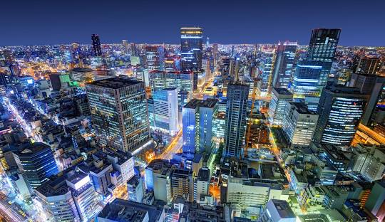

Sakura Tours
Welcome to Sakura Tours

Zenko-ji Temple and Snow Monkeys Park Tour
from $600.00 per group (up to 6)
Maximize your time in Japan by embarking on a convenient day tour from Tokyo to Nagano, where you can explore the Jigokudani Monkey Park and the majestic Zenkoji Temple. In winter, witness adorable monkeys soaking in thermal pools amidst snow-covered landscapes; however, the park is home to monkeys all year round. With private transfers from Tokyo, you can relax knowing you won't miss your bus or have to navigate foreign roads.
What You Can Do
See two of the top attractions near Nagano on this full-day excursion. Explore the tranquil grounds of the 1400-year-old Zenko-ji Temple, one of Japan's most important temples. Enjoy a guided sake tasting at a nearby brewery and a hearty lunch at a local restaurant. Then, head to the Snow Monkey Park, located down a beautiful forest trail, to witness a group of local macaques known for their willingness to live in the snow and bathe in the local hot springs.- Explore Zenko-ji Temple, one of Japan’s oldest Buddhist temples
- Taste various sakes and learn more about the Japanese beverage
- Learn about snow monkeys in their natural habitat at the Snow Monkey Park.
- Enjoy a delicious lunch designed to highlight the best of Nagano
What to Expect: Itinerary
Stop 1: Zenko-ji Temple
Location: I-491 Nagano Motoyoshicho, Nagano 380-0851 Nagano Prefecture
Description: Zenko-ji Temple, dating back to the 7th century, is one of Japan's most significant and popular temples. It houses the first Buddhist statue brought into Japan during Buddhism's introduction in the 6th century. While the original statue remains hidden, a copy is displayed to the public every six years for a few weeks. The next viewing opportunity is expected in 2028. Zenko-ji played a crucial role in Nagano's development, as the city grew around this temple of great importance.
Duration: 3 hours
Stop 2: Monzen Merchant House Chockura Oiraikan, 165-3 Oaza Nagano Higashimachi
Location: 165-3 Oaza Nagano Higashimachi, Nagano 380-0831 Nagano Prefecture
Description: Opened in 2018, Monzen Terrace Enya has become one of Nagano's most popular restaurants. Offering a diverse menu of Japanese and Western cuisine, Enya is renowned for its delicious food, wide selection of drinks, friendly service, and English-speaking staff. Situated near the entrance to the near-1400-year-old Zenko-ji Temple, Monzen Terrace Enya is a favorite spot for locals and international visitors alike—a modern and vibrant restaurant in the heart of the city's historic district.
Duration: 01:30 hours
Stop 3: Jigokudani Snow Monkey Park
Location: 6845 Heion, Yamanouchi-machi, Shimotakai-gun 381-0401 Nagano Prefecture
Description: The Jigokudani Monkey Park offers a unique experience of observing wild monkeys bathing in a natural hot spring. Inhabited by Japanese Macaques, also known as Snow Monkeys, the park is nestled in the forests of the Jigokudani valley in Yamanouchi, near the onsen towns of Shibu and Yudanaka.
The park features a man-made pool where monkeys gather, just a short walk from the entrance. Monkeys can be seen along the path to the pool, living in large social groups. It's quite entertaining to watch their interactions, as they're accustomed to human presence and mostly ignore their visitors. However, touching or feeding the monkeys is strictly prohibited.
Duration: 3 hours
Mt. Fuji Cherry Blossom & Shibasakura Festival Tour
from $500.00 per group (up to 5)
This exclusive tour is tailored for families, friends, couples, and groups seeking a memorable experience.
Crafted with fun in mind, it promises to leave lasting impressions.
Lake Kawaguchiko, famed for its breathtaking views of Mt. Fuji, dazzles in every season. Guests have the
opportunity to embark on a scenic journey via rope way and cruise ship, offering panoramic vistas of Mt.
Fuji and its surroundings. Particularly renowned for its spring cherry blossoms and autumn hues, the lake
is a sight to behold.
Included in the package is convenient pick-up and drop-off service. Simply provide your pick-up address in
the special requirements section upon booking, and I'll handle the rest. The itinerary is fully
customizable; feel free to add or skip any destinations according to your preferences.
The Shibazakura Festival, celebrated for its stunning cherry blossoms, runs from mid-April to late May.
Rest assured, I have a fleet of vehicles suitable for all group sizes.
Remember: saving time is akin to enriching oneself.
What to Expect: Itinerary
Stop 1: Mt. Fuji 5th StationLocation: Narusawa-mura, Minamitsuru-gun, Yamanashi Prefecture
Description: This is the most popular of the four 5th stations on Mount Fuji and is easily accessible by private transportation from Tokyo. The Fuji Subaru Line 5th Station is open almost year-round, depending on snow conditions, and is a popular sightseeing spot even outside of the climbing season.
Duration: 2 hours
Stop 2: Chureito Pagoda
Location: 2-chōme-4-1 Asama, Fujiyoshida, Yamanashi 403-0011, Japan
Description: Visitors can witness the beauty of nature and a variety of cherry blossoms and flowers at this spot. From the top, enjoy a panoramic view of Mt. Fuji.
Duration: 1 hour 30 minutes
Stop 3: Kitaguchi Hongu Fuji Sengen Jinja Shrine
Location: 5558 Kamiyoshida, Fujiyoshida 403-0005 Yamanashi Prefecture
Description: This shrine features the old and highest wooden gate, surrounded by large trees, some of which are over 1000 years old. It's a peaceful place for travelers.
Duration: 1 hour
Stop 4: Oshino Hakkai
Location: 151 Shibokusa, Oshino-mura, Minamitsuru-gun 401-0511 Yamanashi Prefecture
Description: Designated as a World Heritage site in 1934, this area boasts over 300 cherry blossom trees, food and gift shops, and eight crystal-clear water ponds. It's a charming village for travelers.
Duration: 1 hour
Stop 5: Lake Kawaguchiko
Location: Fujikawaguchiko-machi, Minamitsuru-gun 401-0300 Yamanashi Prefecture
Description: Lake Kawaguchiko is a popular destination with boat cruises and the Kachi Kachi Ropeway offering panoramic views from the top. There are also various restaurants and gift shops, making it a great place for both adults and children.
Duration: 2 hours
Stop 6: Oishi Park
Location: Oishi, Fujikawaguchiko-machi, Minamitsuru-gun 401-0305 Yamanashi Prefecture
Description: This park offers a panoramic view of Mount Fuji and a beautiful lavender flower garden, as well as a variety of other flowers.
Duration: 1 hour
Stop 7: Saiko Iyashi no Sato Nemba
Location: 2710 Saikonemba, Fujikawaguchiko-machi, Minamitsuru-gun 401-0332 Yamanashi Prefecture
Description: This traditional Japanese village dates back to the samurai era and is nestled amidst beautiful mountains. Destroyed by a mud flood in 1966, some houses have been restored and opened for visitors. It's a peaceful place with a unique view of Mt. Fuji, and the journey offers breathtaking views of Saiko Lake.
Duration: 1 hour
Sakura Tours
Embark on an unforgettable journey to Japan's renowned jewel, Mount Fuji, with our seamless day tour from Tokyo. Immerse yourself in the breathtaking landscapes as you explore multiple vantage points around the Fuji area, such as Hakone, Lake Kawaguchi, and the revered 5th Station on Mount Fuji, weather permitting. Delve into the allure of this iconic peak and tailor your experience to your preferences, as our private tour allows for complete customization of the itinerary. Experience the majesty of Mount Fuji in the most personalized and enchanting way possible.
Popular Sites
-

Tokyo
-
Kyoto
-

Osakas
Tags
Mount Fuji Tokyo Kyoto Osaka Hiroshima Hokkaido Okinawa Nara Nikko Hakone